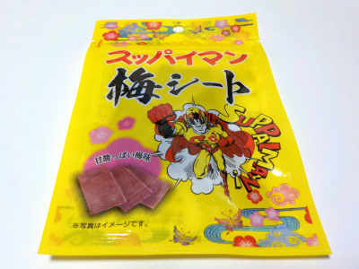

井上食品のスッパイマン梅シート
2023/03/04

何も考えずに奥歯でかんで食べたら、シートが歯や歯茎にびたっと付きました。気を付けて食べた方が良さそうです。
梅ペーストが板状になっているので、ちょっと梅昆布っぽく見えました。
昆布なしの梅だけなので、梅味が濃いです。スッパイ感もしっかりあって美味しかったです。
兵庫県神戸市西区池上1丁目13番地の9
2023/03/04

何も考えずに奥歯でかんで食べたら、シートが歯や歯茎にびたっと付きました。気を付けて食べた方が良さそうです。
梅ペーストが板状になっているので、ちょっと梅昆布っぽく見えました。
昆布なしの梅だけなので、梅味が濃いです。スッパイ感もしっかりあって美味しかったです。